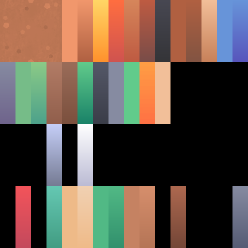

Eén palet voor zeven bouwdozen
Elke Kenney-kit kwam met een eigen colormap.png: zeven paletten van elk 64 kleurcellen.
De modellen gebruikten daarvan maar een fractie, en veel cellen waren tussen de kits (vrijwel) identiek.
tools/consolideer-palet.mjs heeft de écht gebruikte cellen samengevoegd tot dit ene gedeelde palet;
alle 307 .glb-modellen zijn omgeschreven en zien er
in de modellenpreview hetzelfde uit als eerst.
Het gedeelde palet
…Ga met de muis over een cel om te zien welke kits en modellen hem gebruiken. Geblokte cellen zijn leeg (daar wijst geen enkel model meer naar).

Meest & minst gedeeld
De zeven oude paletten
Ter vergelijking de originele colormaps (bewaard als colormap-origineel.png).
Vervaagd = werd door geen enkel model van die kit gebruikt; dat was gemiddeld 85% van elke kaart.